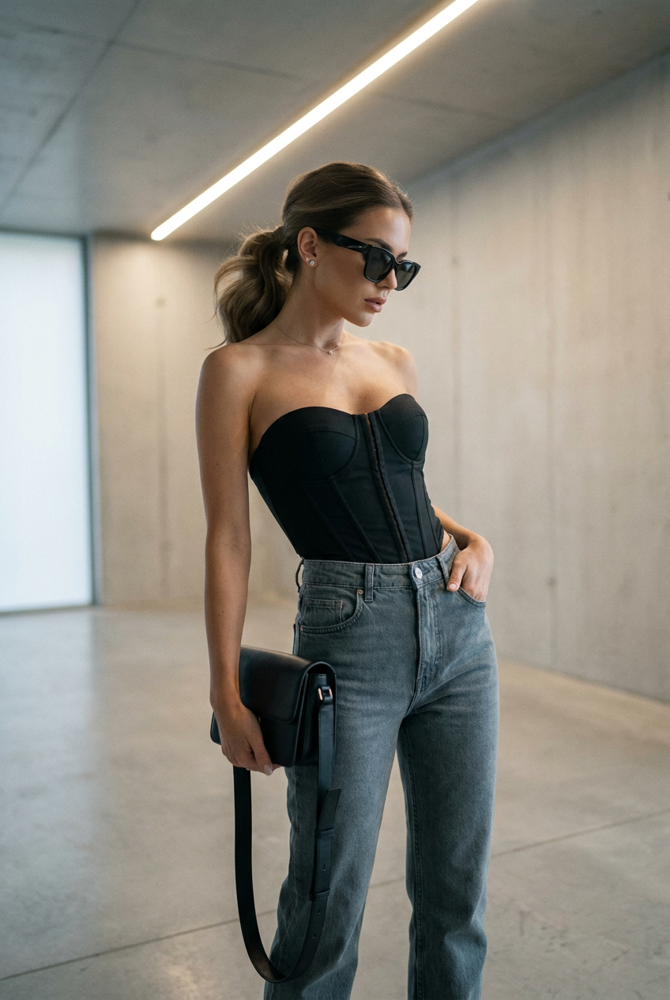
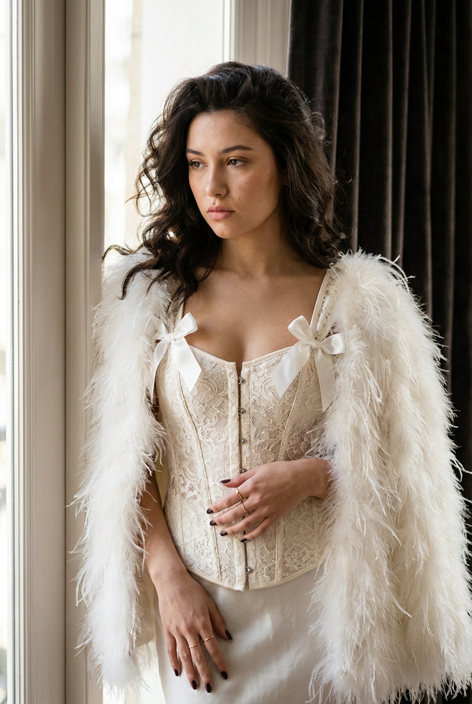
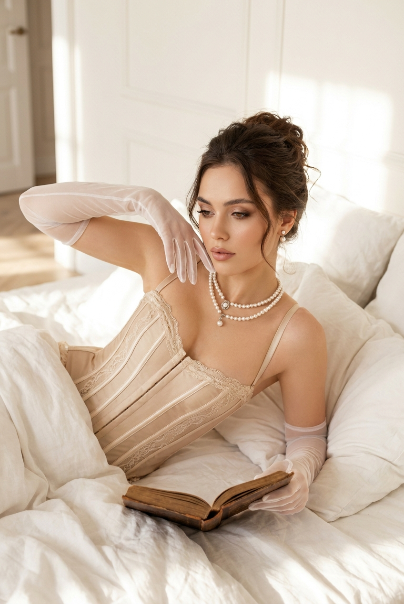
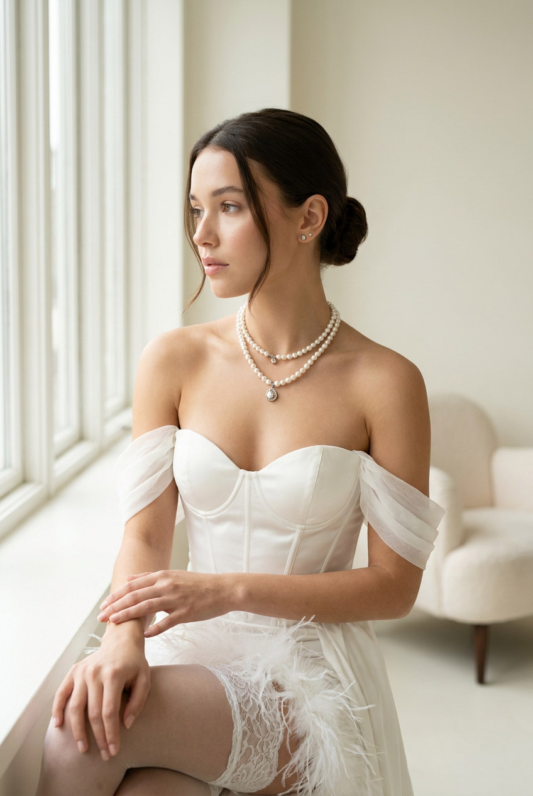
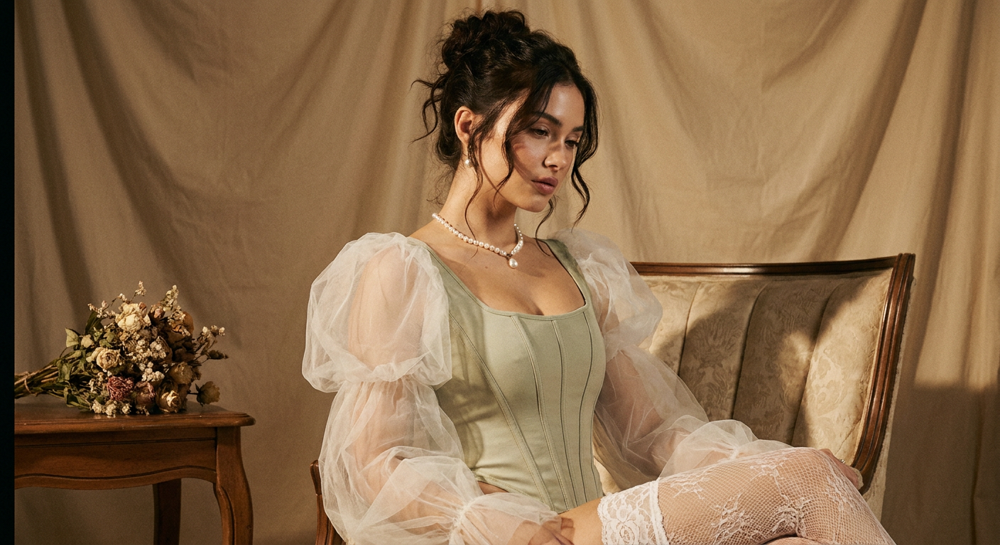
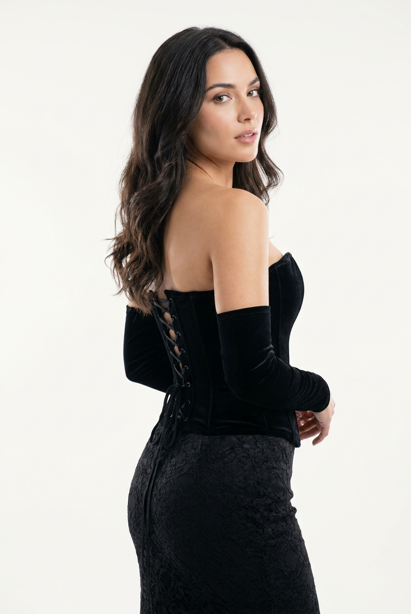
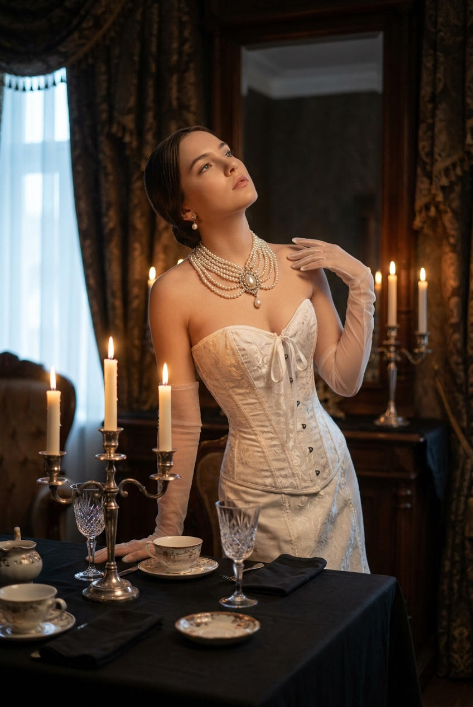
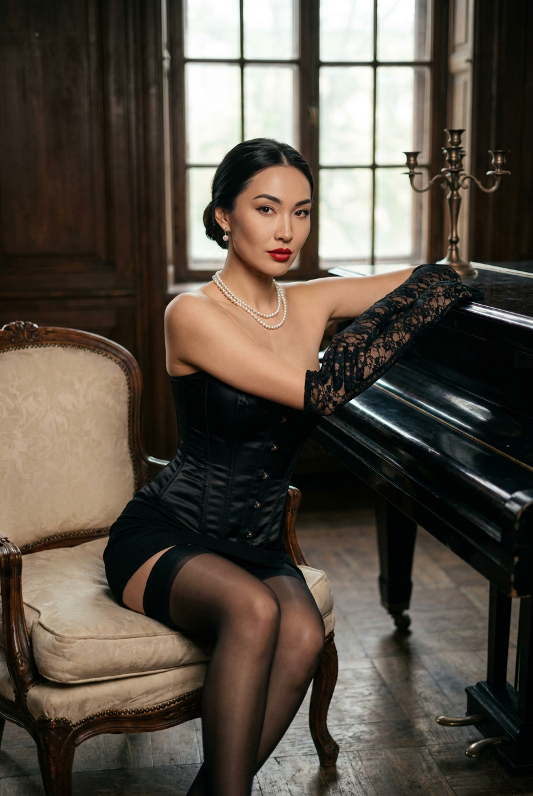
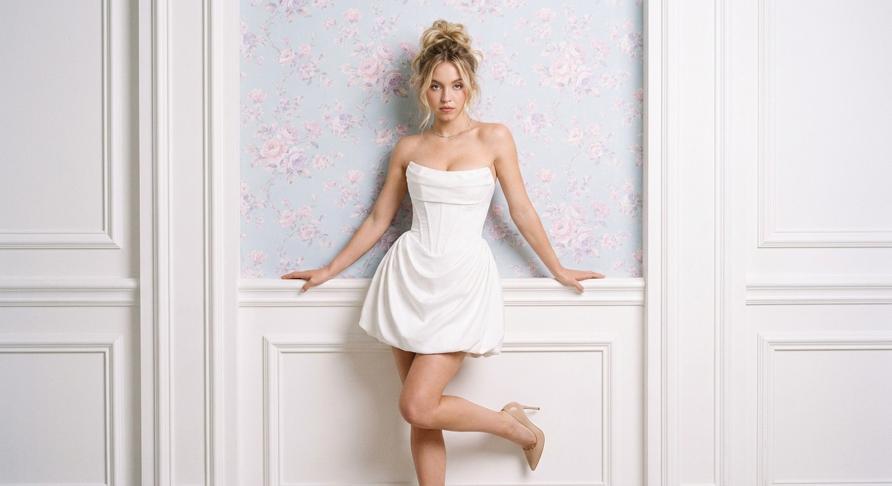
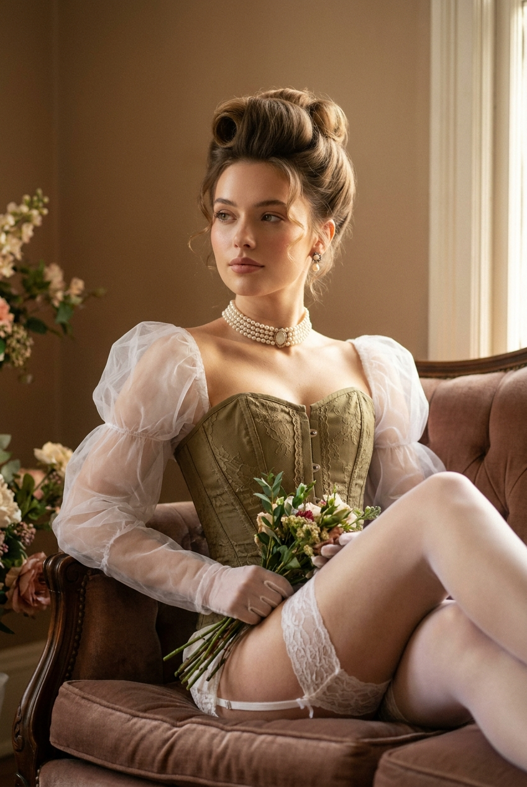

ИИ-фото в корсете: 10 промптов для нейросети

Корсет эффектно выглядит на референсе, но нейросеть часто путает конструкцию лифа, ломает руки и добавляет случайные детали. Хороший промпт помогает заранее задать посадку одежды, позу, свет и настроение кадра.
В подборке — 10 сценариев для съёмки в корсете: минималистичный fashion, luxury boudoir, спальня с белым бельём, викторианский будуар, рояль, жемчуг и пастельный интерьер. Каждый текст можно использовать как основу и адаптировать под свой референс.
Как сгенерировать такое фото: пошагово
Нужен снимок анфас при ровном свете, лицо в кадре целиком, без тёмных очков и головных уборов. Разрешение от 1000 пикселей по короткой стороне. Чем чётче исходник, тем точнее модель повторит черты.
Выберите сценарий ниже и нажмите «Копировать» — текст уйдёт в буфер целиком, вместе с командой сохранения внешности. Эта команда стоит первой строкой и отвечает за то, чтобы на выходе было ваше лицо, а не случайное.
Кнопка «Сгенерировать» рядом с каждым промптом открывает модель в новой вкладке. Nano Banana Pro работает с референсом лица — в отличие от моделей, которые генерируют портрет с нуля и узнаваемость теряют.
Промпт — в поле ввода, портрет — через загрузку референса. Порядок значения не имеет, но без референса команда сохранения внешности работать не будет: модели нечего сохранять.
Для сторис и ленты берите 9:16, для превью и обложек — 4:3. Первый результат редко идеален: если поза или свет ушли не туда, поправьте соответствующую часть промпта и запустите заново. Обычно хватает двух-трёх итераций.
10 промптов для генерации
1. Чёрный корсет в минимализме
Строго сохранить внешность по загруженному референсу: черты лица, пропорции, мимику и текстуру кожи без изменений. Фотореалистичная вертикальная fashion/editorial-съёмка в современном минималистичном интерьере. Молодая женщина стоит на светло-сером бетонном полу, корпус развёрнут на три четверти, взгляд опущен и направлен в сторону через крупные тёмные очки. Настроение спокойное, собранное и уверенное. Волосы уложены мягко, собраны в низкий объёмный хвост, аккуратно виден пробор. Небольшие серьги-гвоздики и тонкая подвеска дополняют образ. На модели чёрный структурированный бюстье без бретелей с вырезом сердечком, вертикальными панелями и заметной прострочкой; плотная ткань держит форму и слегка подчёркивает талию. Добавить чёрные облегающие брюки с высокой посадкой, гладкую фактуру и лаконичный силуэт. Мягкий рассеянный студийный свет, нейтральная палитра, реалистичная текстура кожи, editorial luxury, объектив 85 мм, f/4, вертикальный кадр 4:5. Использовать лицо с загруженного референса без изменения индивидуальных черт, пропорций и мимики.
2. Бархатный образ у стены

Строго сохранить внешность по загруженному референсу: черты лица, пропорции, мимику и текстуру кожи без изменений. Вертикальное фотореалистичное фото в эстетике luxury boudoir, средний план от головы до бёдер. Женщина стоит у светлой стены или дверного проёма, слегка боком к камере; корпус повернут влево, голова наклонена, взгляд уходит вниз и в сторону. Одна рука спокойно опущена у талии и касается корсета, вторая расслаблена и чуть согнута. На ногтях чёрный лак, на пальцах несколько тонких минималистичных колец. Объёмные волосы уложены мягкими волнами, отдельные пряди свободно обрамляют лицо. Вечерний макияж с выразительными глазами, деликатными тенями, ровной кожей и сатиновыми нюдовыми губами. Чёрный корсет из матового материала с плотной посадкой, тонкой шнуровкой и декоративными швами, открытые плечи, высокая талия; поверх — лёгкая чёрная накидка или юбка с мягкой фактурой. Тёплый свет из окна, мягкие тени, объектив 50 мм, f/2.8, натуральная кожа, спокойная дорогая атмосфера. Сохранить лицо и внешность по загруженному референсу.
3. Корсет на белых подушках

Строго сохранить внешность по загруженному референсу: черты лица, пропорции, мимику и текстуру кожи без изменений. Фотореалистичная вертикальная boudoir-съёмка в премиальной спальне. Молодая женщина лежит на белых подушках и смятом белом постельном белье, тело вытянуто по диагонали кадра, корпус развёрнут к объективу. Волосы собраны наверх, у висков остаются тонкие свободные пряди. Макияж вечерний: аккуратные стрелки, выразительные тени, ровный естественный тон и губы с мягким сатиновым оттенком. Лицо спокойное, немного задумчивое, взгляд направлен вниз и в сторону. Одна рука согнута возле лица; длинная белая перчатка касается виска, пальцы изящно разведены. Вторая рука держит раскрытую старинную книгу, страницы видны в переднем плане. На модели светлый корсет цвета слоновой кости с рельефными панелями и тонкой шнуровкой, закрытая посадка без откровенной наготы. Мягкий свет из окна, кремово-белая палитра, кинематографичная глубина резкости, объектив 85 мм, f/2, кадр 4:5. Точно повторить лицо, мимику и пропорции с референса.
4. Жемчуг у большого окна

Строго сохранить внешность по загруженному референсу: черты лица, пропорции, мимику и текстуру кожи без изменений. Светлая фотореалистичная beauty/editorial-съёмка в высоком ключе, вертикальный средний план. Женщина сидит рядом с большим окном в воздушной комнате, камера находится на уровне глаз и снимает модель в три четверти сбоку. Она повернута профилем влево, смотрит вдаль, выражение задумчивое и тихое. Волосы собраны в гладкую причёску с аккуратным пробором, несколько прядей мягко обрамляют лицо. Кожа сохраняет естественную текстуру, макияж почти невесомый: ровный тон, ухоженные брови, светлые тени и натурально-розовые губы. Главный акцент — многослойное жемчужное ожерелье из нитей разной длины с крупной центральной жемчужиной; допустимы маленькие серьги-пусеты. На модели кремовый корсет без бретелей с мягким вырезом сердечком, гладкой фактурой и тонкой вертикальной конструкцией. Дневной свет через окно, бело-молочная палитра, мягкие тени, объектив 70 мм, f/3.2, высокая детализация. Использовать лицо с референса без изменения его черт.
5. Мятный корсет в винтаже

Строго сохранить внешность по загруженному референсу: черты лица, пропорции, мимику и текстуру кожи без изменений. Фотореалистичная fashion/editorial-съёмка в романтичной винтажной эстетике. Взрослая женщина сидит в мягкой женственной позе на кресле или банкетке в камерной студии. Фон бежево-коричневый, с драпированной тканью и мягкой театральной тенью на стене; слева в кадре стоит небольшой букет сухих или нежных цветов. Атмосфера тёплая, уютная, художественная и дорогая. На модели нежный корсет светло-мятного или пастельно-зелёного оттенка с плотной посадкой, декоративными швами и шнуровкой. Прозрачные белые тюлевые рукава объёмно собраны у плеч и запястий, ткань выглядит воздушной. Добавить тонкое винтажное украшение на шее. Волосы уложены мягкими волнами, макияж естественный с лёгким румянцем и приглушёнными губами. Тёплый боковой свет, мягкие переходы теней, объектив 50 мм, f/2.8, вертикальный кадр 4:5. Сохранить индивидуальные особенности лица по загруженному референсу.
6. Чёрный бархат со спины

Строго сохранить внешность по загруженному референсу: черты лица, пропорции, мимику и текстуру кожи без изменений. Гламурная фотореалистичная fashion/boudoir-съёмка без откровенной наготы. Женщина стоит в студии на однотонном почти белом или молочном фоне, корпус развёрнут на три четверти и слегка повернут спиной к камере. Лицо показано в профиль через плечо, взгляд направлен в сторону, губы чуть приоткрыты, настроение спокойное и уверенное. Волосы уложены свободными волнами: часть струится по спине и плечам, заметны отдельные естественные пряди. На модели чёрный бархатный корсет-бюстье с открытыми плечами, высокой линией по спине и подчёркнутой талией; в центре спины хорошо видна шнуровка с металлическими люверсами. На руках — чёрные бархатные рукава или перчатки до запястий. Минимум украшений, чистая композиция, мягкий рассеянный свет, лёгкий контровой акцент по волосам, объектив 85 мм, f/4, вертикальный формат 4:5. Лицо, мимику и пропорции взять с референса без изменений.
7. Викторианский ужин при свечах

Вертикальная фотореалистичная fashion/boudoir-съёмка в духе викторианского будуара. Женщина стоит рядом с богато сервированным столом, тело вытянуто вдоль плоскости кадра, корпус слегка развёрнут, голова запрокинута, взгляд уходит вверх. Мягкий свечной свет ложится на лицо и шею, часть черт растворяется в тени, сзади появляется деликатный контровой ореол. Волосы гладко зачёсаны назад, пробор почти не заметен. Вечерний макияж утончённый: подчёркнутые глаза, ровный тон, нейтрально-розовые губы; допустимы маленькие серьги. На модели корсет глубокого винно-красного оттенка с плотными вертикальными панелями, открытыми плечами и узкой талией, поверх — фактурная юбка в викторианском стиле с закрытым силуэтом. На шее многослойное жемчужное ожерелье с несколькими нитями разной длины. Тёмная кинематографичная палитра, свечи в боке, объектив 50 мм, f/1.8, выразительный chiaroscuro-свет. Сохранить внешность по загруженному лицевому референсу.
8. Корсет у чёрного рояля

Строго сохранить внешность по загруженному референсу: черты лица, пропорции, мимику и текстуру кожи без изменений. Кинематографичный фотореалистичный портрет в ретро-glamour и boudoir-эстетике. Элегантная молодая женщина сидит на винтажном стуле с мягкой кремовой подушкой перед чёрным роялем в старинной комнате. Левым локтем она опирается на корпус инструмента, правая рука расслабленно поддерживает позу; ноги вытянуты вперёд и слегка перекрещены. На ней чёрный атласный корсет с передними застёжками-крючками и тонкой декоративной линией, короткая чёрная юбка, полупрозрачные чёрные чулки и длинные кружевные перчатки до локтя. На шее двойное жемчужное ожерелье, в ушах маленькие серьги-жемчужины. Волосы собраны в аккуратную низкую причёску, макияж изящный: стрелки, подчёркнутые ресницы, спокойные губы. Тёплый направленный свет, блики на лакированном рояле, глубокие мягкие тени, объектив 50 мм, f/2.2, вертикальный кадр 4:5. Лицо и индивидуальные черты точно соответствуют загруженному референсу.
9. Белый корсет у панелей

Строго сохранить внешность по загруженному референсу: черты лица, пропорции, мимику и текстуру кожи без изменений. Фотореалистичная fashion/editorial-съёмка в нежной пастельной гамме. Молодая женщина стоит у белой декоративной стены с классическими панелями в эстетике премиальной виллы или ателье. Она опирается обеими руками на верхнюю кромку белого выступа, корпус немного наклонён вперёд, взгляд прямо в объектив, выражение спокойное и уверенное. Макияж естественный: чистая кожа с живой текстурой, мягкие тени, аккуратные губы и лёгкий акцент на глазах. На модели белое мини-платье без бретелей: корсетный лиф с мягким структурированием и вырезом сердечком или прямой линией, тонкий шов подчёркивает талию. Юбка объёмная, колоколообразная, с драпировкой, складками и лёгкими сборками; матовая ткань красиво рассеивает свет. Волосы уложены гладко, украшения минимальны. Мягкий дневной свет, кремово-белый фон, объектив 70 мм, f/3.5, вертикальный формат 4:5, высокая детализация ткани. Использовать лицо по референсу, не менять его пропорции и мимику.
10. Оливковый корсет на диване

Строго сохранить внешность по загруженному референсу: черты лица, пропорции, мимику и текстуру кожи без изменений. Винтажная фотореалистичная fashion/boudoir-съёмка, вертикальный средний или крупный план. Женщина сидит на мягком диване или кресле справа в кадре, корпус немного развёрнут к камере, голова повернута влево, взгляд направлен в сторону. Выражение мечтательное и спокойное, лицо освещено мягким тёплым светом. Волосы собраны в объёмную винтажную причёску с высоким валиком или пучком, у висков выбиваются короткие завитки. На шее многослойное жемчужное украшение или жемчужный чокер с длинными нитями, в ушах небольшие серьги с жемчугом или камнями. Одежда закрытая: корсет спокойного зелёно-оливкового или хаки оттенка с декоративной шнуровкой, рельефными панелями и аккуратной посадкой по фигуре; добавить юбку или плотную ткань в тон, без открытой наготы. Фон напоминает старинную гостиную, тени мягкие, палитра тёплая, объектив 85 мм, f/2.8, натуральная кожа и фактура ткани. Точно сохранить лицо и индивидуальность с загруженного референса.
Что важно учесть в этом стиле
Корсет в кадре должен оставаться одеждой, а не превращаться в набор случайных ремней. Указывайте форму лифа, материал, наличие косточек, шнуровки, панелей и посадку по талии. Для fashion-образа лучше сразу задать закрытый силуэт, чтобы генератор не добавлял лишнюю откровенность.
Свет и фон определяют настроение сильнее, чем сам цвет корсета. Мягкое окно даёт clean fashion, свечи создают драматичный викторианский эффект, а бархат, жемчуг и старинная мебель поддерживают ретро-стилистику. Для лица полезно отдельно прописывать естественную текстуру кожи и запрет на чрезмерную ретушь.
Идеи для вариаций
- Замените чёрный бархат на бордовый сатин, шоколадную кожу или серебристый жаккард.
- Перенесите сцену из спальни в гардеробную, театральную ложу или зимний сад.
- Добавьте веер, длинные перчатки, камею, брошь или тонкую цепочку вместо жемчуга.
- Попробуйте съёмку с объективом 35 мм для большего количества интерьера или 105 мм для почти портретного кадра.
- Поменяйте настроение: прямой взгляд и жёсткий боковой свет дадут силу, опущенные глаза и рассеянный свет — мягкую задумчивость.
Как собрать свой промпт
Начните с формата и жанра: вертикальный editorial-кадр, портрет или средний план. Затем задайте локацию, положение тела, направление взгляда и действие рук. После этого опишите корсет: цвет, ткань, вырез, шнуровку, декоративные линии и вещи, которые дополняют образ.
В финале добавьте свет, объектив, диафрагму, соотношение сторон и ограничения: без лишней наготы, лишних пальцев, деформации украшений и пластиковой кожи. Если лицо берётся с референса, уточните, что нужно сохранить индивидуальные черты, мимику и пропорции. При первом результате меняйте только один параметр за раз и закладывайте 4–8 генераций на подбор удачной позы.
Ошибки, из-за которых кадр не получается
- Слишком общий корсет. Без материала и конструкции лиф может превратиться в топ, платье или набор декоративных полос.
- Несовместимая поза. Запрокинутая голова, сложные руки и опора на предмет требуют подробного описания, иначе кисти и локти деформируются.
- Перегруженный промпт. Если одновременно задать несколько локаций, источников света и стилистик, нейросеть смешает их в один случайный образ.
- Нет указания на кадрирование. Без слов «средний план», «от головы до бёдер» или «крупный портрет» модель может обрезать украшения и детали одежды.
- Чрезмерная ретушь. Формулировки вроде «идеальная кожа» часто убирают естественную текстуру и делают лицо пластиковым.
Частые вопросы
Как сделать такое ИИ-фото бесплатно?
Для первых попыток подойдут Kandinsky и Шедеврум: они позволяют генерировать изображения без оплаты, но качество сложной анатомии, одежды и работы с лицевым референсом может быть нестабильным. Krea AI и Arena.ai удобны для тестов и сравнения результатов, однако доступные режимы, лимиты и функции загрузки референса меняются. Бесплатный результат обычно требует нескольких перегенераций и ручного отбора.
Как сохранить лицо с фотографии?
Загрузите чёткий референс без сильных фильтров, где лицо хорошо освещено. В промпте отдельно попросите сохранить форму глаз, носа, губ, овал, мимику и пропорции. Не меняйте одновременно причёску, возраст, ракурс и выражение лица — это снижает сходство.
Почему нейросеть деформирует корсет?
Чаще всего причина в слишком коротком описании одежды или сложной позе. Укажите материал, форму выреза, вертикальные панели, шнуровку и место застёжки. Для первого прохода выберите простую стойку, фронтальный или трёхчетвертной ракурс, а затем усложняйте сцену.
Как сделать изображение более похожим на журнальную съёмку?
Задайте жанр fashion/editorial, конкретный источник света, фокусное расстояние и диафрагму. Для спокойного портрета подойдут 85 мм и f/2.8–4, для выразительного интерьера — 35–50 мм. Добавьте естественную текстуру кожи, контролируемые тени и вертикальный формат 4:5.